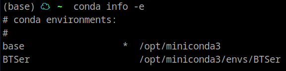

关于conda，啰嗦几句
conda是一个配置隔离python环境的工具
因为有些时候我们需要不同版本的python或不同版本的pip模块（比如你需要跑两个从github上下下来的代码，他们的tensorflow版本一个要求1.0一个要求2.0）
conda既可以实现pip模块不同版本共存，也可以实现python不同版本共存
conda只是一个工具，它有两种发行版，分别是Anaconda和Miniconda
anaconda是一个大而全的工具集合，包括了非常多常用的pip模块（如numpy、pandas、scipy、matplotlib等），它还有图形化的管理工具等
miniconda是一个单纯的conda工具，仅自带极少的python必要的包，干净纯粹，可以按照自己的需求构建任意环境
miniconda比anaconda小非常多，可以实现全部日常需求，只不过需要自己动手
下载
由于anaconda和miniconda的服务器都在国外，所以下载速度会比较慢
推荐大家使用镜像源进行下载，这里使用清华的conda镜像
miniconda下载地址: https://mirrors.tuna.tsinghua.edu.cn/anaconda/miniconda
anaconda下载地址: https://mirrors.tuna.tsinghua.edu.cn/anaconda/archive
打开后可以选择适合自己系统的安装包（win是exe，linux是sh），然后可以根据后边的日期找到最新版本，一般都选3.0的版本，因为2.0是给python2用的
安装
win用户直接双击exe文件不断下一步即可
linux用户到命令行中执行
bash 下载文件的名字.sh比如
bash Miniconda3-latest-Linux-x86_64.sh
命令即可开始安装，按照提示回车即可完成安装
换源
这是安装完成后最重要的一步，还是因为conda的仓库都在国外，所以访问速度很慢，我们要把仓库的地址换成国内的镜像源，才能正常的使用（以正常速度下载而不是龟速）
win用户：
打开开始菜单，会找到conda的prompt的程序（就是在conda文件夹下，名字里带prompt，图标是黑色控制台的程序）
执行命令：
conda config --set show_channel_urls yes（复制命令粘贴后，回车执行）去C盘找到Users文件夹，然后找到你用户名字的文件夹（假设你系统装在C盘）
比如我的叫Joe，你可能是Administrator或你自己起的别的什么名字，就可以看到名叫
.condarc的文件打开
.condarc文件，删掉里边 全部 的东西，然后去https://mirrors.tuna.tsinghua.edu.cn/help/anaconda这个地址，复制这个框框里全部内容，然后粘贴到.condarc里保存退出
你的框框可能是白的
- 回到刚才的prompt黑黑的控制台窗口（你不会关了吧，关了就重新打开），然后执行
conda clean -i就ok了
linux用户：
打开你的终端（别告诉我你不知道什么是终端），然后切换到你conda的安装位置，默认会在用户文件夹下，进入它的bin文件夹
这个bin文件夹下会有一个叫
conda的程序，你执行./conda init即可完成初始化，如果不行试试./conda init bash，之后你再进终端默认就是conda的base环境了之后的操作和win上类似：去用户目录下找
.condarc文件，如果没有你就手动创建一个，然后去 https://mirrors.tuna.tsinghua.edu.cn/help/anaconda复制框框里全部的内容，粘贴到.condarc保存退出（如果本来有内容就全部删掉再粘贴）再执行一个
conda clean -i就完成了换源
然后就是正常的使用，默认conda会是base环境，你当然可以在这里装任何你需要的包，如果你想要创建多个隔离的虚拟环境，你还需要掌握conda环境的创建和切换
创建环境
一般我们都是用名字进行创建，执行 conda create -n 你想要的名字 python 即可创建
conda的命令都以 conda 开头，然后 create 表示创建环境，然后 -n 表示要给环境取个名字，后边空格一下跟上名字就好了，然后后边的 python 是要安装的模块的名字，这里只装了一个python，还可以指定版本，比如python=3.8，如果还想装别的，可以继续往后跟
示例：
conda create -n tf python=3.8 tensorflow=2.2
这样，你就得到了一个名叫tf包含python和tensorflow两个包的conda环境
查看环境
你可以执行 conda info -e 来查看所有环境，比如我的是这样的：

base里的那个*表示的是当前环境是它
激活（切换）环境
创建好了之后，我们就可以执行命令通过名字来激活指定的环境，比如我可以执行： conda activate BTSer 来切换到我这个环境
如果你刚才跟着做了，你可以通过 conda activate tf 来切换到你的tensorflow环境
在环境中安装模块
安装前要确认一下，当前是否在你想要的环境中，如果没有先切换一下，省得安装到错误的环境中去了。确认无误后，执行 conda install 模块名 即可安装，比如 conda install scipy
删除环境
如果你不想要某个环境了，可以通过 conda remove -n 环境名 --all 来删除这个环境